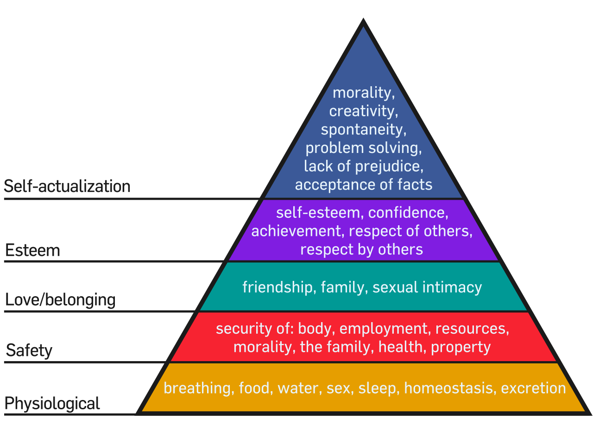
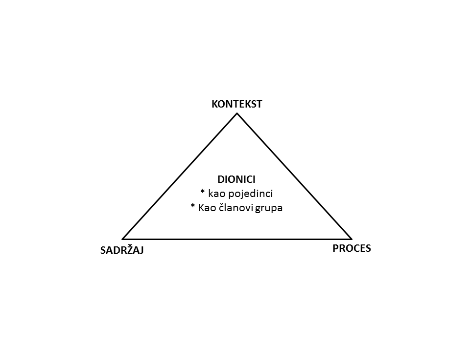
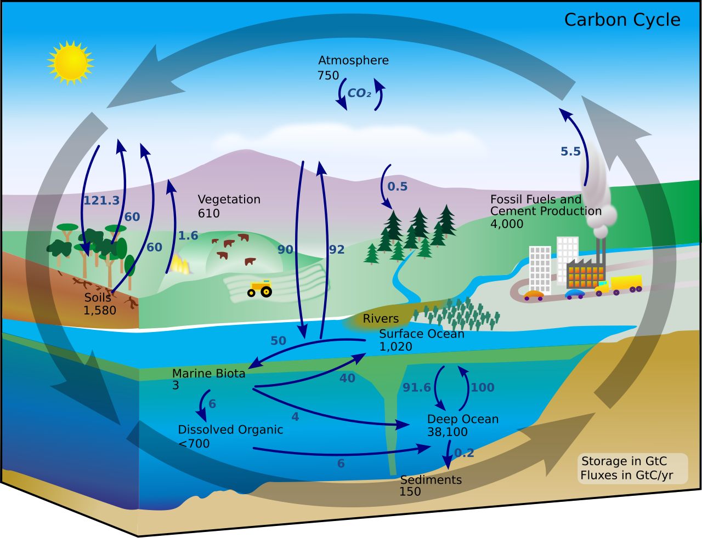
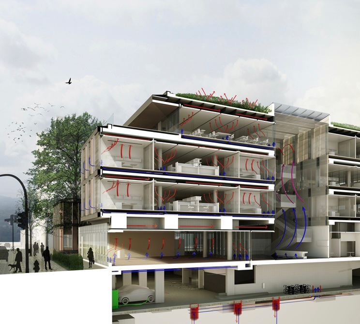
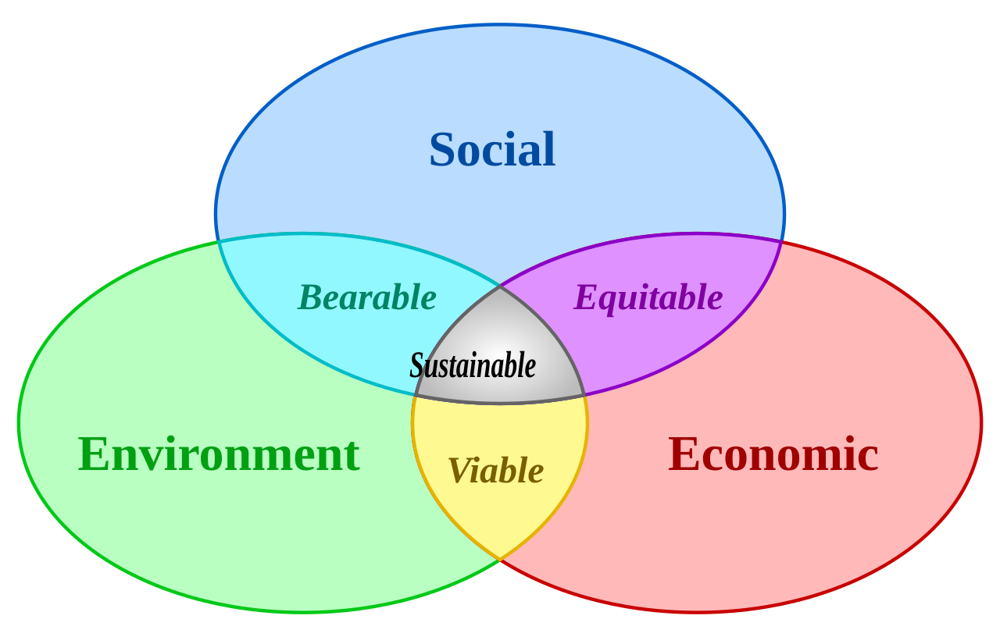
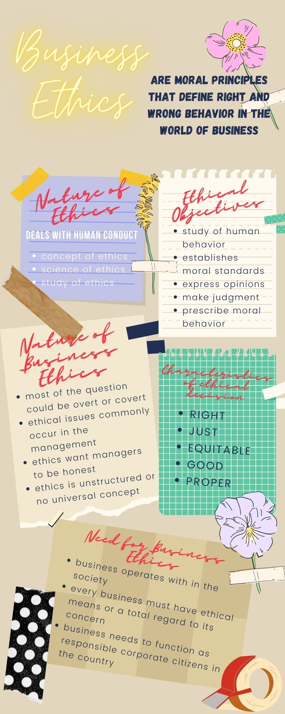

Universal Human Values & Professional Ethics
Complete Exam-Ready Study Guide covering Units I–IV with SPPU Oct 2025 & Model Q&As, Comparison Tables, Visual Diagrams, and Case Studies.
Course Overview & SPPU 2024 Exam Pattern
| Question Pair | Syllabus Unit | Typical Marks (Oct 2025 Pattern) | High-Yield Topics |
|---|---|---|---|
| Q1 or Q2 | Unit I: Introduction to Value Education | 8 Marks (5M + 3M) | Guidelines of Value Education, Self-Exploration Diagram, Happiness & Prosperity, Priority Order |
| Q3 or Q4 | Unit II: Harmony in the Human Being | 9 Marks (5M + 4M) | Self ('I') vs. Body Table, Body as Instrument, Sanyam & Swasthya Programme |
| Q5 or Q6 | Unit III: Harmony in Family & Society | 9 Marks (5M + 4M) | Intention vs. Competence, Over/Under/Otherwise Evaluation, Glory vs. Gratitude, 9 Values |
| Q7 or Q8 | Unit IV: Harmony in Nature & Existence | 9 Marks (5M + 4M) | Four Orders of Nature, Co-existence, Ethical Human Conduct, Holistic Technology |
Unit I: Introduction to Value Education (07 Hours)
In the SPPU End-Semester Exam (Q1 or Q2, 8-9 Marks), Unit I always tests: (1) Basic Guidelines & Content of Value Education, (2) Process of Self-Exploration (with flowchart), (3) Continuous Happiness & Prosperity, and (4) Priority of Right Understanding, Relationship & Physical Facility.
1.1 Understanding Value Education
Before learning engineering skills, we must ask: "What is truly valuable for a human being, and how do we live a fulfilling life?" Technical education teaches us how to build things (skills), while Value Education teaches us what is worth building and why (values).
Exam Definition: Value Education is the educational process that enables a human being to understand human aspirations, realize what is truly valuable for human happiness and prosperity, and live in harmony at all four levels of existence (Individual, Family, Society, and Nature).
In Simple Words: It is like a GPS for life. Engineering skills give you a fast car, and Value Education tells you the right destination so you don't drive fast in the wrong direction.
Need for Value Education
- Correct Identification of Aspirations: Helps distinguish between what we truly want (continuous happiness and prosperity) and temporary sensory attractions.
- Understanding Universal Human Values: Establishes values that apply equally to all humans regardless of caste, creed, nationality, or religion.
- Complementarity of Values and Skills: Values answer "What to do?" and Skills answer "How to do?". Both are essential; skills without values lead to harmful technologies (e.g., cybercrime, addictive algorithms, weapons), while values without skills lack execution.
- Evaluation of Beliefs: Replaces blind beliefs and social conditioning with self-verified understanding.
- Holistic Technology & Sustainable Development: Guides engineers to design people-friendly and eco-friendly systems.
Basic Guidelines for Value Education (5 Marks Favorite)
| # | Guideline | SPPU Exam Explanation | Simple Analogy |
|---|---|---|---|
| 1 | Universal | Applicable to all human beings at all times and places, irrespective of religion, caste, gender, or nationality. | Like gravity or $2+2=4$; true for everyone everywhere. |
| 2 | Rational | Appeals to human reasoning and logic; not based on blind dogma, fear, or superstition. | You can question it and test it logically like a theorem. |
| 3 | Natural & Verifiable | Naturally acceptable to every human being and verifiable in real life through experiential validation. | Telling the truth feels naturally right without anyone forcing you. |
| 4 | All-Encompassing | Covers all dimensions of human living (thought, behaviour, work, realization) and all four levels (Self, Family, Society, Nature). | Not just a 1-hour moral class; applies to coding, family, and nature. |
| 5 | Leading to Harmony | Promotes harmony within oneself, among humans, and with nature rather than conflict or competition. | Like instruments in an orchestra playing in tune, not fighting to be loudest. |
1.2 Self-Exploration as the Process for Value Education
Exam Definition: Self-exploration is a process of dialogue between "what you are" and "what you really want to be". It is a process of self-evolution through self-investigation, knowing oneself, and verifying proposals on the basis of one's own Natural Acceptance and Experiential Validation.
In Simple Words: Instead of memorizing someone else's rules, you test every idea inside yourself—like running unit tests on your own beliefs to see if they pass in real life.
Content of Self-Exploration (2 Core Questions)
- Desire / Aspiration: What is my basic aspiration? (What do I really want to be?)
- Programme: What is the programme to fulfil this basic aspiration? (How do I achieve it?)
Process of Self-Exploration
Do not assume any statement in UHV to be true just because it is in a textbook. Treat every statement as a Proposal and verify it in two steps:
- Verify on the basis of Natural Acceptance (Sahaj Swikrati): Ask yourself internally: "Is this naturally acceptable to me? Do I want this unconditionally?"
- Verify through Experiential Validation: Live according to the proposal in two ways:
- Behaviour with human beings → Does it lead to Mutual Happiness?
- Work with rest of nature → Does it lead to Mutual Prosperity?
Exam Definition: Natural Acceptance is the innate, unconditional, and invariant faculty within every human being that helps discern what is right and harmonious without external pressure or preconditioning.
In Simple Words: Your inner compass. Even if you are angry at someone, if you pause and ask, "Do I want to be in a state of relationship or opposition?", your inner answer is always relationship.
Characteristics of Natural Acceptance
- Does not change with time, place, or person (universal and invariant).
- Does not depend on our past preconditioning (Manyata) or beliefs.
- Always present inside us and intact; we only need to pay attention to it.
1.3 Continuous Happiness and Prosperity — Basic Human Aspirations
Every human being, regardless of age, culture, or profession, shares two fundamental, continuous aspirations:
Exam Definition: "To be in a state of liking is happiness." More deeply, happiness is a state of harmony or synergy at all four levels of living (Individual, Family, Society, Nature/Existence), where there is no internal contradiction.
In Simple Words: A calm, peaceful, satisfied mind that you want to stay in continuously—not a 5-minute thrill that vanishes.
Exam Definition: Prosperity is the feeling of having or making available more than required physical facilities. It requires two things: (1) Right assessment of physical needs, and (2) Competence to produce/make available more than what is assessed as needed.
In Simple Words: Knowing how much is enough for your body and having slightly more than that—so you feel rich enough to share, not anxious to hoard.
1. Prosperity: $\text{Prosperity} = \text{Right Assessment of Physical Need} + (\text{Available Facility} > \text{Required Facility})$
2. Holistic Fulfilment: $\text{Right Understanding} + \text{Relationship} \rightarrow \text{Mutual Happiness}$; $\text{Right Understanding} + \text{Physical Facility} \rightarrow \text{Mutual Prosperity}$
Wealth vs. Prosperity (Common 4M Question)
| Aspect | Wealth (Dhan / Suvidha) | Prosperity (Samriddhi) |
|---|---|---|
| Nature | A physical thing (money, land, gadgets). | A feeling in the Self ('I') of having more than required. |
| Condition | Can exist without knowing one's actual need. | Requires right assessment of need + availability > need. |
| Outcome | A person with crores can still feel poor and greedy (deprived). | A person with modest resources who knows their need feels content and shares. |

1.4 Right Understanding, Relationship and Physical Facility
To fulfil Continuous Happiness and Prosperity, a human being needs three things in a strict priority order:
- Priority 1 — Right Understanding (Sahi Samajh): Understanding harmony in Self, Family, Society, and Nature.
- Priority 2 — Relationship (Sambandh): Living with mutual trust, respect, and affection with other human beings → gives Mutual Happiness.
- Priority 3 — Physical Facility (Suvidha): Food, clothes, shelter, tools, laptops → necessary for the Body, gives Mutual Prosperity when guided by Right Understanding.
Animal Consciousness vs. Human Consciousness & Transformation Categories
- Animal Consciousness: Living solely for physical facilities (food, shelter, sensory pleasure). For animals this is sufficient, but for humans it causes endless greed and conflict.
- Human Consciousness: Living with Right Understanding, Relationship, and Physical Facility in priority order.
- Three States of Living (SVDD → SSDD → SSSS):
- SVDD (Sadhan Vihin Dukhi Daridra): Lacking physical facilities, unhappy and deprived.
- SSDD (Sadhan Sampanna Dukhi Daridra): Having plenty of physical facilities (wealthy), yet still unhappy and feeling deprived.
- SSSS (Sadhan Sampanna Sukhi Samriddha): Having right understanding + required physical facilities, happy and prosperous (the goal of UHV).
1.5 Happiness and Prosperity — Current Scenario
Today, society largely assumes that Physical Facility = Happiness + Prosperity. Because of this wrong assumption:
- At Individual Level: Rising stress, depression, burnout, lifestyle diseases, and addiction despite higher salaries.
- At Family Level: Broken families, lack of trust, generation gap, and disputes over property.
- At Society Level: Corruption, terrorism, cyber-fraud, widening rich-poor gap, and fear.
- At Nature Level: Global warming, pollution, deforestation, and resource depletion.
1.6 Method to Fulfil the Basic Human Aspirations
The method to fulfil our basic aspirations is to develop Right Understanding through Self-Exploration and live in harmony at all four levels of human existence:
- Harmony in Myself (Individual): Aligning desires, thoughts, and expectations with Natural Acceptance.
- Harmony in Family: Recognizing feelings like Trust and Respect in relationships.
- Harmony in Society: Working toward an Undivided Society (Akhand Samaj) with fearlessness and justice.
- Harmony in Nature / Existence: Co-existing with the four orders of nature through sustainable, cyclic practices.
Important SPPU Exam Questions & Model Answers (Unit I)
Model Answer Points: (1) Define Value Education (understanding human aspirations and living in harmony at all 4 levels). (2) State why it is needed (values + skills complementarity). (3) List and explain all 5 guidelines with 1-2 lines each: Universal, Rational, Natural & Verifiable, All-Encompassing, Leading to Harmony.
Model Answer Points: (1) Define Self-exploration (dialogue between "what you are" and "what you really want to be"). (2) Draw the flowchart: Proposal → Verify on Natural Acceptance + Experiential Validation (Behaviour → Mutual Happiness, Work → Mutual Prosperity) → Right Understanding. (3) Explain each block briefly.
Model Answer Points: (1) Without Right Understanding, physical needs seem unlimited, leading to hoarding and exploitation. (2) Right Understanding helps assess exact need of the Body (quantity) and produce more than required in an eco-friendly way → Mutual Prosperity. (3) Example 1: Buying a laptop that meets coding needs (right assessment) and donating/recycling the old one instead of upgrading every 6 months. (4) Example 2: Cooking/ordering only as much food as needed (zero food waste) while sharing surplus with others.
Unit II: Harmony in the Human Being (07 Hours)
In SPPU End-Sem (Q3 or Q4, 9 Marks), the most frequently asked questions are: (1) Co-existence of Self ('I') and Body, (2) Distinguishing Needs & Activities of Self vs. Body (tabular form), (3) Body as an Instrument of the Self (Seer, Doer, Enjoyer), and (4) Sanyam & Swasthya Programme.
2.1 Human Being as Co-existence of the Self ('I') and the Body
Exam Definition: A human being is the co-existence of two distinct realities: the Self ('I' / Jeevan), which is a conscious entity, and the Body (Sharir), which is a material (physico-chemical) entity. There is only an exchange of information between them.
In Simple Words: Think of the Self ('I') as the driver / user and the Body as the car / hardware. The car needs fuel and servicing, while the driver decides where to go and feels happy or stressed.
$$\text{Human Being} = \text{Self ('I' — Consciousness)} \oplus \text{Body (Material — Physico-chemical)}$$
Note: The interaction between 'I' and Body is strictly exchange of information (instruction from 'I' to Body, sensation from Body to 'I').
2.2 Distinguishing Between the Needs & Activities of the Self ('I') and the Body
This comparison table is the single highest-scoring question in Unit II:
| Dimension | Self ('I' / Consciousness) | Body (Sharir / Material) |
|---|---|---|
| Basic Need | Happiness (Sukha) — Trust, Respect, Love, Peace. | Physical Facility (Suvidha) — Food, Water, Clothing, Shelter. |
| Duration (Time) | Continuous (we want respect and happiness 24×7). | Temporary (we eat for 20 minutes, not 24 hours). |
| Quantity | Qualitative (cannot be measured in kg or litres). | Quantitative (limited & measurable: 2 rotis, 2 litres water). |
| Fulfilled By | Right Understanding & Right Feeling. | Physico-chemical things (nutrients, fabric, bricks). |
| Activities | Desiring, Thinking, Selecting/Tasting, Analysing, Imaging. | Breathing, Heartbeat, Digesting, Walking, Seeing. |
| Type of Activity | Knowing, Assuming, Recognising, Fulfilling. | Only Recognising & Fulfilling (automatic/programmed). |
Buying an expensive branded watch or smartphone is a physical thing, but people often buy it expecting respect (a need of 'I'). Since physical things are temporary and quantitative, they can never satisfy the continuous, qualitative need of 'I'.
2.3 The Body as an Instrument of the Self
In the relationship between 'I' and Body, 'I' is the master and the Body is my instrument (tool). Specifically, 'I' plays three roles:
- 'I' am the Seer (Drashta): The one who understands, observes, and sees meaning. Eyes only capture light signals; 'I' understand what is seen.
- 'I' am the Doer (Karta): The one who takes decisions. Hands only execute; 'I' decide whether to help someone or harm someone.
- 'I' am the Enjoyer (Bhokta): The one who experiences happiness or unhappiness. The tongue senses sweet/bitter, but 'I' feel joy or irritation.
2.4 Understanding Harmony in the Self ('I')
Inside the Self ('I'), our Imagination (Kalpanashilata) runs continuously through three activities:
- Desire (Ichha / Chintan): Imaging what we want to be or achieve.
- Thought (Vichar): Analysing and comparing ways to fulfil that desire.
- Expectation (Asha): Selecting and tasting options in day-to-day interactions.
Three Sources of Imagination (Why Do We Feel Confused?)
- Preconditioning (Manyata): Beliefs picked up blindly from ads, social media, peers, or family without verification (e.g., "Expensive clothes = respect").
- Sensation (Samvedana): Chasing sensory pleasures (taste, sight, sound) as the primary goal.
- Natural Acceptance (Sahaj Swikrati): Inner clarity verified on our own right.
When our Desires, Thoughts, and Expectations are driven by Preconditioning or Sensation, we live in Partantrata (Enslavement) and feel inner conflict. When they are guided by Natural Acceptance, we achieve Swatantrata (Self-organization / Inner Harmony).
2.5 Harmony of the Self with the Body (Sanyam & Swasthya)
Exam Definition: Sanyam is the feeling of responsibility in the Self ('I') for the nurturing (Poshan), protection (Sanrakshan), and right utilization (Sadupayoga) of the Body.
In Simple Words: Caring for your body like a responsible owner cares for a valuable instrument—feeding it right, protecting it, and using it for meaningful work.
Exam Definition: Swasthya is the condition of the Body where: (1) every part of the Body performs its expected function in harmony, and (2) the Body acts according to the instructions of the Self ('I').
In Simple Words: Your body is fit, energetic, and obeys your decisions (no lethargy, pain, or sickness blocking your goals).
$$\text{Sanyam (Responsibility in 'I')} \xrightarrow{\text{causes}} \text{Swasthya (Health in Body)}$$
Lack of Sanyam (eating junk for taste, staying awake till 3 AM scrolling reels) directly leads to lack of Swasthya (illness).

2.6 Programme to Ensure Self-Regulation and Health
To maintain Sanyam and Swasthya, UHV prescribes a structured 6-part programme:
| Pillar of Sanyam | Practical Programme | Student Example |
|---|---|---|
| 1. Nurturing (Poshan) | Ahar (Food): Nutritious, fresh, seasonal, eaten in right quantity at regular times. Vihar (Lifestyle): Proper sleep, rest, and work-life rhythm. |
Eating balanced meals instead of skipping breakfast and binging fast food at midnight. |
| 2. Protection (Sanrakshan) | Clothing & Shelter: Protecting body from heat, cold, rain, and pollution. Asana & Pranayama: Posture, stretching, breathing exercises. Shram & Vyayam: Physical labour and daily exercise. |
30 minutes of brisk walking/yoga daily and maintaining ergonomic posture while coding. |
| 3. Right Utilization (Sadupayoga) | Using the Body for gaining Right Understanding, fulfilling relationships, and productive work—not for sensory indulgence. Aushadhi-Chikitsa: Medicine/treatment only when body needs repair. |
Using eyesight and hands to build helpful software rather than doomscrolling for 6 hours. |
Python Self-Check Tool: Needs & Sanyam Classifier (Runnable Example)
def classify_need(item: str, is_continuous: bool, is_quantitative: bool) -> str:
'''Classify a human need into Self ('I') or Body based on UHV criteria.'''
if is_continuous and not is_quantitative:
return f"'{item}' -> Need of SELF ('I') [Qualitative, fulfilled by Right Understanding/Feeling]"
if not is_continuous and is_quantitative:
return f"'{item}' -> Need of BODY [Quantitative, fulfilled by Physico-chemical facility]"
return f"'{item}' -> Check assumptions (mixing Self and Body needs!)"
if __name__ == "__main__":
samples = [
("Respect from teammates", True, False),
("2 litres of drinking water", False, True),
("Trust in family", True, False),
("Ergonomic chair & desk", False, True),
]
for name, cont, quant in samples:
print(classify_need(name, cont, quant))Important SPPU Exam Questions & Model Answers (Unit II)
Model Answer Points: (1) Define co-existence of Self ('I') and Body. (2) Compare across 3+ attributes: Needs (Happiness vs. Physical Facility), Time/Quantity (Continuous & Qualitative vs. Temporary & Quantitative), and Activities (Desiring/Thinking/Selecting vs. Breathing/Heartbeat/Digesting). Give concrete examples (e.g., Respect vs. Food).
Model Answer Points: Explain the three roles of 'I': Seer (Drashta), Doer (Karta), and Enjoyer (Bhokta). Clarify that the Body only receives sensations and executes instructions; 'I' makes the decisions and experiences happiness/unhappiness.
Model Answer Points: Purpose of Self: Continuous happiness through Right Understanding and Harmony. Purpose of Body: To act as an effective instrument of the Self. Right utilization (Sadupayoga): Using the Body for self-evolution, fulfilling human relationships, and producing useful physical facilities for society without harming nature.
Unit III: Harmony in the Family and Society (08 Hours)
In SPPU End-Sem (Q5 or Q6, 9 Marks), examiners repeatedly test: (1) Trust (Vishwas) & Intention vs. Competence (4-quadrant table), (2) Respect (Samman) as Right Evaluation & Over/Under/Otherwise Evaluation with examples, (3) 9 Values in Relationship (especially Glory vs. Gratitude), and (4) Comprehensive Human Goal & Universal Human Order.
3.1 Harmony in the Family & 'Trust' (Vishwas) as the Foundational Value
The Family is the basic unit of human interaction where we first learn to recognize and fulfil feelings. Every relationship is fundamentally between one Self ('I') and another Self ('I')—not merely between two bodies.
Four Proposals for Understanding Relationship
- Relationship IS (it already exists; we don't have to create it from scratch, only recognize it).
- Relationship is between one Self ('I') and another Self ('I').
- There are feelings in the Self ('I') for the other Self ('I').
- Recognizing and fulfilling these feelings leads to Mutual Happiness (Ubhaya-Sukha).
Exam Definition: Trust (Vishwas) is to be assured that every human being inherently wants to make me happy and prosperous (and I want to make them happy and prosperous).
In Simple Words: Trust means believing that the other person's basic intention is good—even if they make a mistake because they lack skill right now.
Intention vs. Competence (Most Important 5M Concept in Unit III)
Why do we doubt people and get angry? Because we confuse Intention (Chahat / Natural Acceptance) with Competence (Yogyata / Ability):
| Question | About Myself ('I') | About the Other Person |
|---|---|---|
| 1. Intention (What I/they want) | I want to be happy and make others happy. (Always pure) | They also want to be happy and make me happy. (We often doubt this!) |
| 2. Competence (Ability to execute) | Sometimes I fail due to lack of skill/understanding. | Sometimes they fail due to lack of skill/understanding. |
| How we usually judge | We judge ourselves by Intention ("I didn't mean to break it!"). | We judge others by Competence ("They broke it on purpose!"). |
| Outcome | Doubting Intention → Anger, opposition, broken relationship. | Recognizing Lack of Competence → Compassion, helping them learn! |
3.2 'Respect' (Samman) — as the Right Evaluation
Exam Definition: Respect (Samman = Sam + Maan) means Right Evaluation of a human being—evaluating them as they truly are, neither more nor less, on the basis of the Self ('I') rather than physical appearance, wealth, or beliefs.
In Simple Words: Seeing someone at their real human worth—not exaggerating them out of flattery, not looking down on them, and not judging them by their clothes, caste, or marks.
Three Errors of Evaluation (Why Disrespect Happens — 5M Oct 2025)
| Error Type | Meaning | Real-Life Example | Why It Causes Disrespect |
|---|---|---|---|
| Over-evaluation | Evaluating more than what a person actually is. | Flattering a boss or senior as "a genius who knows everything" just for favours. | Creates false ego; when reality surfaces, both feel awkward and used. |
| Under-evaluation | Evaluating less than what a person actually is. | Assuming a junior or classmate from a rural background "cannot code well". | Humiliates the other person and kills their confidence and trust. |
| Otherwise-evaluation | Evaluating a human as something else entirely (not as a Self 'I'). | Calling a classmate "useless" or "a donkey" when they miss a bug, or treating a worker like a machine. | Denies their human dignity; causes deep hurt and resentment. |
Basis of Respect vs. Differentiation (Discrimination)
- Why all humans are equal ('I' = 'I'): Every human Self has the same Purpose (continuous happiness & prosperity), the same Programme (living in harmony at 4 levels), and the same Potential (capacity to understand and verify). The only difference is in Competence.
- Differentiation (Asamman): Evaluating on the basis of:
- Body: Age, Gender, Race, Physical Strength.
- Physical Facility: Wealth, Post/Designation.
- Beliefs: Religion, Caste, Sect, "-isms".
3.3 Nine Values in Human-to-Human Relationship
UHV identifies 9 Established Values (inner feelings) and their corresponding 9 Expressed Values (observable behaviour):
| # | Established Value (Bhav) | Expressed Value (Behaviour) | Meaning in Simple Words |
|---|---|---|---|
| 1 | Trust (Vishwas) | Complementariness (Saujanyata) | Being assured the other wants my happiness. |
| 2 | Respect (Samman) | Compliance (Sauhardra) | Right evaluation of the other as a human being. |
| 3 | Affection (Sneha) | Commitment (Nishtha) | Feeling of being related to the other ("like family"). |
| 4 | Care (Mamta) | Generosity (Udarata) | Responsibility to nurture and protect the other's Body. |
| 5 | Guidance (Vatsalya) | Spontaneity (Sahajata) | Responsibility to ensure Right Understanding in the other's Self ('I'). |
| 6 | Reverence (Shraddha) | Obedience (Pujyata) | Acceptance of excellence in someone who has achieved Right Understanding. |
| 7 | Glory (Gaurav) | Ease (Saralata) | Respect for someone who has made sincere effort for excellence. |
| 8 | Gratitude (Kritagyata) | Self-restraint (Saumyata) | Feeling of thankfulness for those who helped in my excellence/growth. |
| 9 | Love (Prem) | Unanimity (Ananyata) | The Complete Value — feeling of being related to all human beings and existence. |
Glory vs. Gratitude (4M Exam Question)
| Aspect | Glory (Gaurav) | Gratitude (Kritagyata) |
|---|---|---|
| Basis | Feeling of acceptance for those who have made effort for excellence. | Feeling of acceptance for those who have made effort for MY excellence. |
| Scope | Can be felt even for inspiring figures/scientists you never met personally. | Felt toward parents, teachers, mentors, and friends who directly helped you. |
| Expressed As | Ease (Saralata) and inspiration to learn from them. | Self-restraint (Saumyata) and willingness to serve/help others. |
Exam Definition: Justice is the recognition of values (the 9 feelings) in relationship, their fulfilment, and the right evaluation of this fulfilment resulting in Mutual Happiness.
Role of Physical Facility: Physical facility plays only a symbolic/supporting role in relationships (e.g., cooking a meal out of Care, gifting a book out of Gratitude). Physical things alone cannot create Trust or Love.
3.4 Understanding Harmony in the Society
Harmony in society flows naturally when families live with Justice and Prosperity. UHV defines the Comprehensive Human Goal across four levels:
- Right Understanding & Right Feeling in every individual → Samadhan (Resolution)
- Prosperity in every family → Samriddhi
- Fearlessness (Trust) in society → Abhay
- Co-existence in nature/existence → Sah-astitva
Five Dimensions of Human Order (Vyavastha) to Achieve the Goal
- Education – Sanskar (Shiksha – Sanskar): Developing Right Understanding and commitment to live in harmony.
- Health – Self-regulation (Swasthya – Sanyam): Ensuring physical fitness and responsible body care.
- Production – Work (Utpadan – Karya): Eco-friendly labour on nature to produce needed physical facilities.
- Justice – Preservation (Nyaya – Suraksha): Protecting human relationships (Justice) and nature (Preservation).
- Exchange – Storage (Vinimaya – Kosh): Sharing/exchanging surplus goods for mutual fulfilment, not profit-hoarding.
3.5 Vision for the Universal Human Order
Starting from the individual and family, harmony expands step-by-step into an Undivided Society (Akhand Samaj) and a Universal Human Order (Sarvabhaum Vyavastha)—from Family → Family Cluster → Village → Village Cluster → ... → World Family (Vasudhaiva Kutumbakam).
Important SPPU Exam Questions & Model Answers (Unit III)
Model Answer Points: (1) Define Intention (natural acceptance/desire to be happy and make others happy) vs. Competence (ability/skill to execute). (2) Explain the asymmetry: we judge ourselves by intention and others by competence. (3) Outcome of doubting intention: anger, opposition, breakdown of trust. (4) Outcome of recognizing lack of competence: patience, empathy, and helping the other improve.
Model Answer Points: (1) Define Respect = Right Evaluation. (2) Give all 3 definitions + clear examples (flattery, stereotyping, dehumanizing labels). (3) Explain that any evaluation other than Right Evaluation creates ego, humiliation, or resentment, which is disrespect (Asamman).
Model Answer Points: (1) Glory = acceptance for effort toward excellence; Gratitude = acceptance for effort toward my excellence. (2) Physical facility is only a symbolic expression of feelings like Care and Gratitude; it cannot substitute for Trust or Respect.
Unit IV: Harmony in Nature and Existence (08 Hours)
In SPPU End-Sem (Q7 or Q8, 9 Marks), focus on: (1) The Four Orders of Nature (table + how Human Order differs), (2) Interconnectedness, Self-regulation & Mutual Fulfilment (Cyclicity), (3) Existence as Co-existence (Units in Space), (4) Ethical Human Conduct (Values, Policy, Character), and (5) Holistic Technology & Transition Strategies.
4.1 Understanding Harmony in Nature
Everything in nature—rocks, rivers, trees, animals, and humans—is interconnected and mutually fulfilling. Nature operates through self-regulation and cyclicity (e.g., water cycle, carbon cycle, soil-plant-animal food cycle) without external control.

4.2 Four Orders of Nature: Interconnectedness, Self-Regulation & Mutual Fulfilment
Every unit in nature belongs to one of four orders:
| Order | Examples | Activity | Innateness (Dharana) | Natural Characteristic (Swabhav) | Conformance (Anushasan) |
|---|---|---|---|---|---|
| 1. Material Order (Padartha Avastha) | Soil, water, air, metals, rocks. | Composition & Decomposition. | Existence (Astitva). | Composition / Decomposition. | Constitution Conformance (laws of physics/chemistry). |
| 2. Plant / Bio Order (Prana Avastha) | Trees, grass, crops, bacteria. | Composition/Decomposition + Respiration. | Existence + Growth. | Nurture / Worsen. | Seed Conformance (mango seed → mango tree). |
| 3. Animal Order (Jiva Avastha) | Birds, cows, tigers, fish. | Body: Respire + Selection in 'I'. | Existence + Growth + Will to live in 'I'. | Cruelty / Non-cruelty. | Breed Conformance (calf behaves like cow). |
| 4. Human / Knowledge Order (Gyana Avastha) | Human beings. | Body + Imaging, Analysing, Selecting/Tasting in 'I'. | Existence + Growth + Will to live with continuous happiness. | Perseverance, Bravery, Generosity (with Right Understanding). | Right Value / Sanskar Conformance (through Education). |

How Human Order is Qualitatively Different
Orders 1, 2, and 3 are governed automatically by constitution, seed, and breed conformance. Only the Human Order has Sanskar Conformance (free will + learning). Without Right Understanding, humans cause ecological imbalance (plastic pollution, carbon emissions, e-waste). With Right Understanding, humans become stewards who enrich all four orders.
4.3 Realizing Existence as Co-existence at All Levels
Exam Definition: Existence is the co-existence of mutually interacting Units (both Material and Conscious) submerged in all-pervading Space (Shunya).
In Simple Words: Nothing exists in isolation. Every atom, tree, animal, and human exists together in space, energized and self-organized in relationship.
$$\text{Existence} = \text{Units (Limited, Active, Material + Conscious)} \text{ submerged in } \text{Space (Unlimited, All-pervading, Transparent)}$$
4.4 The Holistic Perception of Harmony in Existence
Holistic Development means progress that ensures Happiness, Prosperity, Fearlessness, and Co-existence simultaneously—not merely GDP growth or faster gadgets at the cost of mental health and climate collapse. It leads directly to the Universal Human Order.

4.5 Professional Ethics in the Light of Right Understanding
Exam Definition: Professional Ethics is the competence to use one's professional skills (engineering, medicine, software) in alignment with Universal Human Values so that every professional action contributes to Mutual Happiness and Mutual Prosperity. Ethical Human Conduct has three pillars: Values (Mulya), Policy (Niti), and Character (Charitra).
In Simple Words: Doing the right thing in your job even when nobody is watching—writing secure, honest, eco-friendly code rather than manipulative dark patterns.

Criteria for Holistic (People-Friendly & Eco-Friendly) Technology (4M AIML Oct 2025)
- Catering to Real Human Needs: Solves genuine health, education, or communication needs rather than creating artificial addictions.
- Eco-Friendly & Cyclic: Uses renewable energy, minimizes e-waste, and supports recycling/biodegradability.
- Safe & Low Resource Footprint: Avoids toxic by-products and excessive power/water consumption (e.g., green data centers).
- Enhancing Human Capability: Empowers users' dignity and skills rather than exploiting their privacy or attention.
Python Holistic-Tech & Ethics Evaluator (SE CS Case-Study Tool)
def evaluate_software_project(name: str, respects_privacy: bool,
eco_efficient: bool, no_dark_patterns: bool) -> str:
'''Evaluate a software/AI system against UHV Professional Ethics criteria.'''
score = sum([respects_privacy, eco_efficient, no_dark_patterns])
if score == 3:
return f"[PASS] {name}: Holistic, people-friendly & eco-friendly technology."
return f"[REVISE] {name}: Score {score}/3 — Fix ethical/ecological gaps before deployment."
if __name__ == "__main__":
print(evaluate_software_project("OpenHealth Telemedicine", True, True, True))
print(evaluate_software_project("Addictive Ad-Tracker App", False, False, False))4.6 Strategies for Transition Towards Value-Based Life and Profession
- At Personal Level: Practice daily self-exploration, Sanyam (health discipline), and verify assumptions before reacting.
- At Educational Level: Integrate UHV with engineering curricula so students learn values + skills together.
- At Workplace / Engineering Level: Conduct ethical AI/privacy audits, adopt green computing, reject bribery/plagiarism, and design accessible software.
- At Societal Level: Support cyclic production, fair trade, and community initiatives that build trust (Abhay).
Important SPPU Exam Questions & Model Answers (Unit IV)
Model Answer Points: (1) List the 4 orders (Material, Plant/Bio, Animal, Human) with examples and activities (Composition/Decomposition, Respiration, Selection in 'I', Imaging/Analysing/Selecting). (2) Highlight that Orders 1-3 follow fixed conformance (Constitution, Seed, Breed), whereas Human Order follows Sanskar Conformance (requires Right Understanding through education).
Model Answer Points: (1) Ethical Human Conduct = Values + Policy + Character, which is definite and universal. (2) Characteristics: trustworthiness, transparency, non-exploitation, mutual fulfilment. (3) Holistic Technology criteria: caters to real human needs, eco-friendly/cyclic, low energy footprint, enhances human capability.
Model Answer Points: (1) Violates Trust and Respect (treats users as data/revenue sources = Otherwise-evaluation). (2) Violates Values, Policy, Character (definitiveness of ethical conduct). (3) Fails Holistic Technology criteria (creates addiction instead of real human need). (4) Action: Refuse manipulative dark patterns, propose opt-in privacy-preserving design, and educate the team constructively.
References, Official Syllabus Books & Image Credits
Textbooks (SPPU 2024 Pattern Official Syllabus)
- R. R. Gaur, R. Asthana, G. P. Bagaria, A Foundation Course in Human Values and Professional Ethics, 3rd Revised Edition, UHV Publications, 2023. ISBN: 978-81-957703-7-3 (Print), 978-81-957703-6-6 (e-Book).
- R. R. Gaur, R. Asthana, G. P. Bagaria, Teachers' Manual for A Foundation Course in Human Values and Professional Ethics, 3rd Revised Edition, UHV Publications, 2023. ISBN: 978-81-957703-5-9 (Print), 978-81-957703-0-4 (e-Book).
Reference Books
- P. L. Dhar, R. R. Gaur, Science and Humanism, Commonwealth Publishers, 1990.
- A. Nagaraj, Jeevan Vidya: Ek Parichaya, Jeevan Vidya Prakashan, Amarkantak, 1999.
- B. P. Banerjee, Foundations of Ethics and Management, Excel Books, 2005.
- A. N. Tripathy, Human Values, New Age International Publishers, 2003.
- E. G. Seebauer & Robert L. Berry, Fundamentals of Ethics for Scientists & Engineers, Oxford University Press, 2000.
- B. L. Bajpai, Indian Ethos and Modern Management, New Royal Book Co., Lucknow, 2004 (Reprinted 2008).
- M. Govindarajan, S. Natarajan & V. S. Senthil Kumar, Engineering Ethics and Human Values, Eastern Economy Edition, Prentice Hall of India Ltd.
- M. K. Gandhi, The Story of My Experiments with Truth, Discovery Publisher.
NPTEL / SWAYAM & E-Resources
- SWAYAM Course: Understanding Human Being Nature and Existence Comprehensively by Dr. Kumar Sambhav — https://onlinecourses.swayam2.ac.in/aic22_ge23/preview
- NPTEL Course: Exploring Human Values: Visions of Happiness and Perfect Society by Prof. A. K. Sharma (IIT Kanpur) — https://nptel.ac.in/courses/109104068
- AICTE UHV Portal: https://fdp-si.aicte-india.org/download.php#1/
- UHV Official YouTube Channel: https://www.youtube.com/channel/UCQxWr5QB_eZUnwxSwxXEkQw
Downloaded Wikimedia Commons Image Credits (UHV/assets/manifest.json)
assets/maslow_hierarchy.png— "Maslow's Hierarchy of Needs.svg" by User:Factoryjoe (License: CC BY-SA 3.0). Source: https://commons.wikimedia.org/wiki/File:Maslow%27s_Hierarchy_of_Needs.svgassets/sustainable_development.png— "Sustainable development.svg" by original: nojhan (talk · contribs) / translation: Pro bug catcher (talk · contribs) (License: CC BY-SA 3.0). Source: https://commons.wikimedia.org/wiki/File:Sustainable_development.svgassets/holistic_health.png— "Walt Gilson triangle of health policy.gif" by Maria Sieglinda von Nudeldorf (License: CC0). Source: https://commons.wikimedia.org/wiki/File:Walt_Gilson_triangle_of_health_policy.gifassets/professional_ethics.png— "Ethics in business.jpg" by Kjeleven (License: CC BY-SA 4.0). Source: https://commons.wikimedia.org/wiki/File:Ethics_in_business.jpgassets/ecological_balance.png— "Biosferas uzbuve.jpg" by Līga Sausiņa (License: Copyrighted free use). Source: https://commons.wikimedia.org/wiki/File:Biosferas_uzbuve.jpgassets/harmony_nature.png— "ETFO Sustainability Diagram (Summer).jpg" by KPMB Architects (License: CC BY-SA 4.0). Source: https://commons.wikimedia.org/wiki/File:ETFO_Sustainability_Diagram_(Summer).jpg